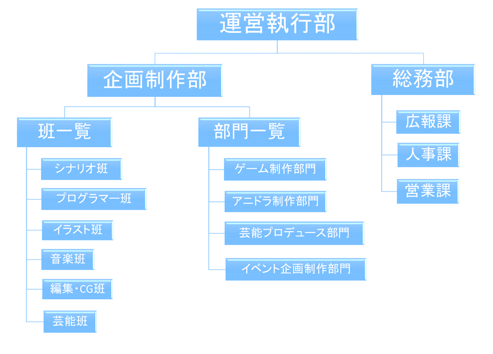

運営団体概要
新規メンバー募集
ホーム
団体情報
組織図
制作理念
広報課
メンバー
芸能班
シナリオ班
編集・CG班
プログラマー班
イラスト班
音楽班
運営執行部
作品
ゲーム
Light VS Light
ひと筆レール
ColorWave
ねずみ退治
ボイスドラマ
EndlessWaltz 哀しみのタナトス
Escape from the world
猫色日和
EndlessWaltz 逆襲のアテナ
白紙の中に
心剣
アニメーション
カレーなる一族
ミュージック
マガジン&ブックス
グッズ
ストア
その他 個人作品
制作日誌
リンク
お問い合わせ

【運営執行部】
UGPにおける意思決定の最高機関。
企画制作部、総務部から活動報告書を受け議論したり 両部署に要望があれば伝達する。
主なる役割はSNSの管理とUGPの運営方針を定めること。
【総務部】
組織全体の事務や属する課の報告を請け負い理事長に 報告する。
三課とは人事、広報、営業からなり 総務の仕事とは他で請け負えなくなったものがある場合 サポートをするのが仕事であって他部署が機能している場合は 特別に仕事はない。
運営執行及び理事長への報告責任は 担っており、必要に迫られなければ三課に指示を出す必要はない。
UGPの活動サポートの窓口となる。
【人事課】
新規団員の面接を行う。
要望があればスカウトを請け負う。
内部で入退団や人員の移動があった場合。SNSにて報告をする。
ただしこれは運営執行や運営執行から伝達の指示を受けた場合のみ 行う。
メンバー希望メールの対応も行う。
【営業課】
UGPで創作された製品の中で販売要望のあるものを 売る方法を考案する。
人員には高いコミュニケーション能力や 先見の目が必要。
プレゼンテーションや顧客へのメール対応を行う。
また広報は大多数への宣伝を目的としているのに対し 営業は個人への宣伝が求められる。
販売要望のあるものに限定されているため 有償作品や販売物がない場合 UGPオンラインショップなどの開拓等しか 行う仕事はない。
【広報課】
UGPを世界に発信していく事を目的とする。
各種サイトやツールなどを使い大多数への宣伝活動を行う。
とにかく団体のことを広めることが目的で その為にはどうすれば良いかという戦略面での活動が 求められる。
また放送企画や大多数に向けた作品の宣伝など 要望が団員からあれば可能な限り応える。
【企画制作部】
UGPにおける制作活動の方針を一任された部署。
各クリエーターの活動状況の確認や製作チームの確認。
また、内部の人が円滑に創作活動が進められるように統制する。
運営や営業課から顧客ニーズに関する製作提案があった場合 必要に応じて話し合う必要もある。
製作ノルマやスケジュールの管理。製作に関する指針を定める必要がある。 内部においては９割以上がこの部署に属しており製作部がUGPの活動本体 と言える。
【各班】
～たちが属する班。班長は製作部長に可能な限り班員の状況を報告する。
【ゲーム制作部門】
UGP公式のゲーム製作部門。
【アニドラ制作部門】
UGP公式のアニメーションやオーディオドラマの製作部門。
【芸能プロデュース部門】
芸能班に所属する人員を活かす事を前提に活動する。
人員の売り込みや歌手の楽曲制作。オンライン番組の企画や制作。
【イベント企画制作部門】
内外部問わずコンテスト企画や交流企画を考案し 実行する。
交流面に関しては創作に特化している必要はない。